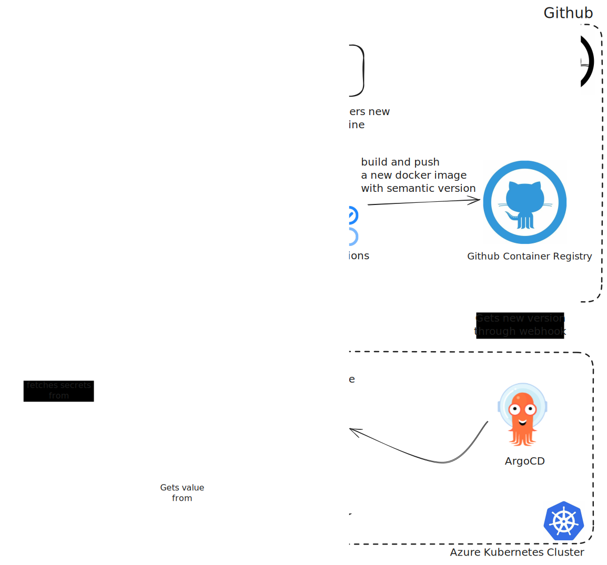

Secret management
Introduction
Secrets are sensitive pieces of information that should be protected from unauthorized access. In the context of a Kubernetes cluster, secrets are used to store sensitive data such as passwords, tokens, and keys. To allow for secure and efficient management of secrets, we are using Azure Key Vault. Azure Key Vault is a tool designed to manage secrets and protect sensitive data. It provides a centralized way to manage access to secrets. This document provides an overview of the secret management process and the role of Azure Key Vault in securing and managing secrets in the Kubernetes cluster.
Azure Key Vault Architecture
Azure Key Vault is a cloud-based service that provides secure storage for secrets, keys, and certificates. It is designed to help safeguard cryptographic keys and secrets used by cloud applications and services. Key Vault simplifies the key management process, enabling you to maintain control of keys and other secrets by centralizing storage and access.
The current configuration allows Azure Key Vault to inject secrets into pods using the CSI (Container Storage Interface) Secret Store driver. This provides a secure way to manage secrets in the Kubernetes cluster and ensures that sensitive data is protected from unauthorized access.
The following diagram illustrates the structure of the Azure Key Vault architecture within our setup:

The following sequence diagram describes the process of how a developer can update secrets using the Azure portal and how the secrets are injected into the pods:
sequenceDiagram
participant Developer
participant FinesseRepo as Finesse Repository
participant GHWorkflow as GitHub Workflow
participant ContainerReg as GitHub Container Registry
participant HowardRepo as Howard Repository
participant ArgoInstance as ArgoCD Instance
participant CSIProvider as CSI Secret Provider
participant FinessePod as Finesse Pod
participant AzureKeyVaultUI as Azure Key Vault UI
participant AzureKeyVault as Azure Key Vault
Developer->>+FinesseRepo: 1. Pushes commits
FinesseRepo->>+GHWorkflow: Triggers workflow
GHWorkflow->>+ContainerReg: Builds and pushes new semantic version
ArgoInstance->>+ContainerReg: Checks for new image tags
ArgoInstance->>+FinessePod: Triggers synchronisation to pod
FinessePod->>+ContainerReg: Fetches image with new version tag
FinessePod->>+FinessePod: Refreshes deployment with new version
Developer->>+AzureKeyVaultUI: 2. Accesses UI to update/create secrets
AzureKeyVaultUI->>+AzureKeyVault: Commit update/creation of secrets
Developer->>+HowardRepo: 3. Commits new/updated secrets
ArgoInstance->>+HowardRepo: Checks for changes in repository
ArgoInstance->>+CSIProvider: triggers refresh on finesse namespace,<br> sync secrets from Azure Key Vault
CSIProvider->>+AzureKeyVault: Fetch specific version of secrets
CSIProvider->>+FinessePod: Injects secrets
ArgoInstance->>+FinessePod: 4. Trigger hard refreshSecret management process
The secret management process involves the following steps:
-
Secret creation: Secrets are created and stored in Azure Key Vault using the Azure Key Vault CLI or API. When a secret is created, it is encrypted and stored in the central Key Vault server.
-
Secret retrieval: Secrets are retrieved by applications and services using the SecretProviderClass that utilizes Managed Identity to securely fetch secrets from Azure Key Vault and inject them into Kubernetes pods.
-
Access control: Azure Key Vault provides fine-grained access control to secrets, allowing administrators to define policies that specify which clients can access which secrets. This ensures that only authorized clients can access sensitive data. Currently, we are using the Managed Identity authentication method to authenticate hosted applications and authorize access to secrets.
Create, read, update, and delete secrets
Azure Key Vault provides a UI service to manage secrets. The UI service is a web-based user interface that allows administrators to create, read, update, and delete secrets. The service also provides a way to manage access control policies and audit logs. The service is accessible through a web browser and is protected by the same security mechanisms as the Key Vault service.
Steps to Update Secret Values Using the Azure Portal
-
Access the Azure Portal: Navigate to the Azure Portal in your web browser.
-
Navigate to Azure Key Vault:
- In the Azure Portal, use the search bar at the top to search for "Key Vaults".
-
Select your Key Vault from the list.
-
Create or Update Secrets:
- In your Key Vault, select the "Secrets" option from the left-hand menu.
- To create a new secret, click on the "+ Generate/Import" button.
- To update an existing secret, click on the secret name in the list and then click on the "New Version" button.
- Enter the name and value for the secret. Ensure the secret name is prefixed
with the app name (e.g.,
librechat-jwt-secret) and click "Create" or "Save".
After updating secrets in Azure Key Vault, the secrets will be automatically
injected into the Kubernetes pods based on the SecretProviderClass
configuration.
Steps to Update Secrets Injected into Pods
In order to update secrets that are injected into pods, you need to update the secret manifest for the application. The secret manifest is a YAML file that defines the secrets that are injected into the pod's environment variables. We will use Finesse as an example.
- Open an Issue and Create a Working Branch:
-
Open an issue with the following template: Secrets update template. You can then create a working branch from the issue.
-
Edit the SecretProviderClass Manifest:
- Open
/kubernetes/aks/apps/finesse/base/secretProviderClass.yaml. -
Update the secrets key references as needed. For example, to add a new secret, you can add a new key-value pair to the
datasection of theSecretProviderClassmanifest:data: - objectName: azure-openai-chatgpt-deployment # This represents the secret name in Azure Key Vault key: AZURE_OPENAI_CHATGPT_DEPLOYMENT # This represents the environment variable name that will be injected into the pod -
Add the objectName and key for the new secret in the 'object' section of the
SecretProviderClassmanifest :objects: - objectName: azure-openai-chatgpt-deployment type: secret version: ""The
objectNamerepresents the secret name in Azure Key Vault (ensure it is prefixed with the app name, e.g., thekeyrepresents the environment variable name that will be injected into the pod. You can also specifyobjectVersionif you want to use a specific version of the secret.
Argo CD Vault plugin (AVP)
The argocd-vault-plugin
is used to manage secrets inside our deployments the Gitops way. It allows to
use <placeholders> in any YAML or JSON files that have been templated and make
use of annotations to provide the path and version of a secret inside vault. For
now, it is only being used for helm deployments that dont have integration for
secrets injection. The plugin is installed in the ArgoCD instance and is
configured to use the Azure Key Vault as the backend for secrets.
An example of usage is showcased inside the vouch-proxy deployment under
kubernetes\aks\system\vouch-proxy\argo-app.yaml